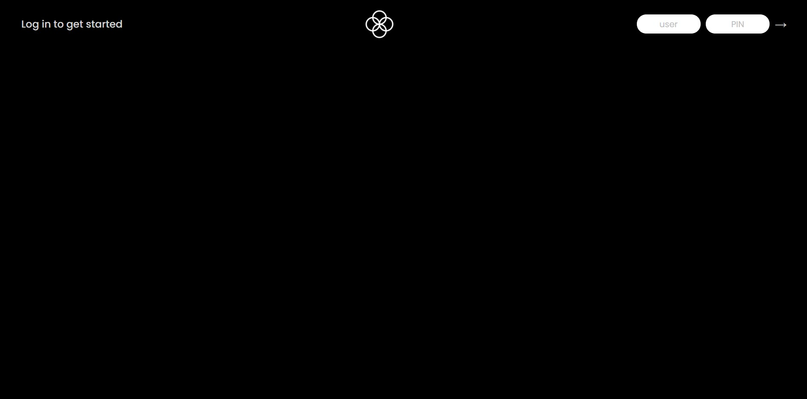
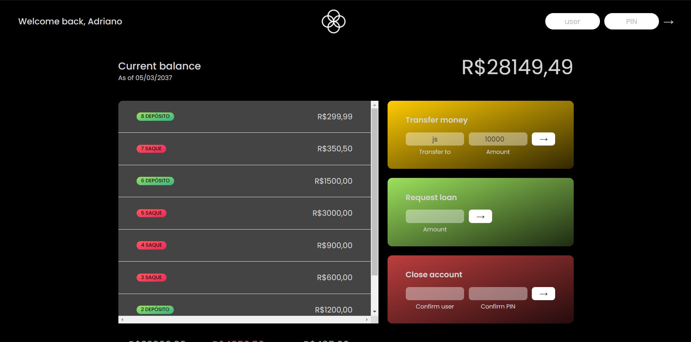

Bankist
Detalhes do Projeto
O website Bankist consiste em um site de banco, no qual é possível realizar algumas das ações que um banco normalmente oferece, como transferências e pedidos de empréstimo.
Na tela de login, basta colocar um dos usuários já cadastrados, junto da senha que representa tal usuário. Assim, têm-se acesso às suas movimentações, bem como sua conta toda.
A partir desta tela, é possível realizar algumas das ações que um banco oferece, como transferir dinheiro para outro usuário, solicitar um empréstimo ao banco ou fechar sua conta.
Caso queira ter acesso ao projeto e vê-lo funcionar, basta clicar aqui e logar como um dos três usuários:
user: js / senha: 1111
user: jd / senha: 2222
user: acm / senha: 1414
← Voltar ao Portifólio